Chapter 6. Forms
This chapter provides an overview of the Forms feature. Forms are integral to any Early Warning, Alert and Response System (EWARS) account, and they serve as the prime instruments to capture information. Moreover, in any given emergency, forms help define the data collection requirements. So they need to be closely aligned with the overall objectives of EWARS in the given situation.
The chapter will help you to perform key actions using forms, thereby setting the stage for data collection activities according to the key objectives of your situation.
6.1 Forms and their uses
Forms are created in EWARS Web and can be viewed in EWARS Mobile for data collection purposes. However, mobile users cannot create, edit or modify forms: only web users are able to modify the forms.
Fig. 6.1 shows the usage of forms in capturing data and using it to display different information via dashboards, alarms, website and so on.
Fig. 6.1. EWARS forms
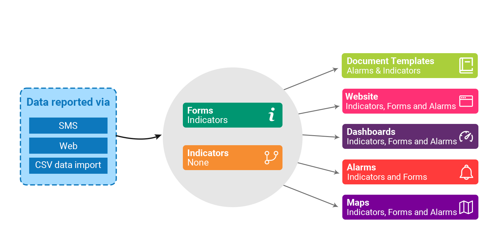
You can create any number of reporting forms for early warnings. There are three types of standard forms:
weekly EWARS reporting forms for health facilities
immediate reporting forms
event-based surveillance forms.
There are two ways to create reporting forms for the system:
copy sample forms and edit them according to your needs
create a new form from scratch.
EWARS provides standard templates for each of the reporting forms in the Model account. You can copy them and adopt according to the needs of your context.
6.2 Copying the sample form to your account
The example below sets out how to copy the weekly EWARS reporting form from the Model account.
- Select Menu > Configuration Transfer. Select Model account from the Source Account drop-down menu. The system displays the List of transferable items. Select the Weekly EWARS Reporting Form. Click on the transfer
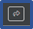
icon, and the form is copied to your account.
 Weekly EWARS reporting forms, immediate reporting forms and event-based surveillance forms share the same format regardless of the country or the context. Therefore, during emergencies, copying a sample form and editing it saves time. Weekly EWARS reporting forms, immediate reporting forms and event-based surveillance forms share the same format regardless of the country or the context. Therefore, during emergencies, copying a sample form and editing it saves time. |
The form is copied to your account along with its dependencies – a set of indicators linked to the form. These copied indicators are available under the indicators menu.
To view the sample form as a preview, follow the steps below:
- Select Menu > Forms > click on the edit
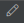
icon of the Weekly EWARS Reporting Form. Click on Fields > click on Preview, and the screen below appears:
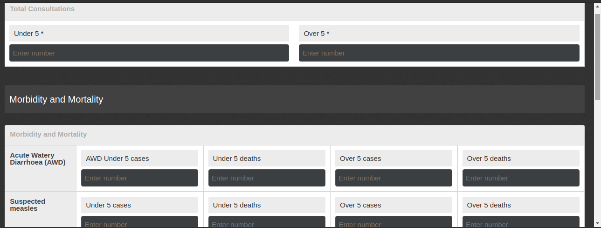
To view the sample form in Report manager, follow the steps below:
- Select Menu > Data Collection > Report manager. Click on Weekly EWARS Reporting Form, and the screen below appears:
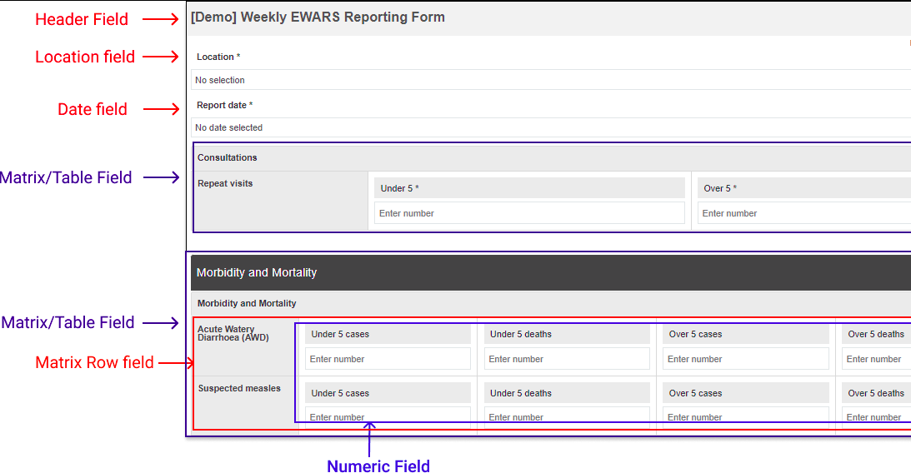
Refer to topic 6.5 Adding and configuring data fields in the form for more information.
 Note: it is not compulsory to use a form copied via Configuration Transfer. Having copied a sample form, you can still create a new form from the beginning. In that case, the sample form can act as a true sample to inspire the development of a form you need, but you should be mindful of the dependencies you may have in the system that transferred with the copied form. Note: it is not compulsory to use a form copied via Configuration Transfer. Having copied a sample form, you can still create a new form from the beginning. In that case, the sample form can act as a true sample to inspire the development of a form you need, but you should be mindful of the dependencies you may have in the system that transferred with the copied form. |
6.3 Editing the sample form
You can edit the copied weekly EWARS reporting form sample form according to your requirements, as in the following examples.
Example 1. Remove the Suspected measles row from the Morbidity and mortality table.
Select Menu > Forms > click on the edit icon in the Weekly EWARS Reporting Form > click on the tab, and the screen with the existing fields appears.
Look for the Suspected Measles row > click on the delete icon, and the row is removed from the table.
Click on Preview to preview it. Click on Save Change(s).
Example 2. Add Bacterial meningitis to the Morbidity and mortality table.
To add a disease row for Bacterial meningitis in the Morbidity and mortality table, you need to add one matrix row field and four input fields – for Under 5 cases, Under 5 deaths, Over 5 cases and Over 5 deaths.
A matrix row field is used inside the table (matrix) field to define rows within in. Refer to topic 6.5.3 Configuring the matrix row field for more information.
- Select Menu > Forms > click on the edit icon of Weekly EWARS Reporting Form > click on the tab, and you the screen below with the existing fields appears:
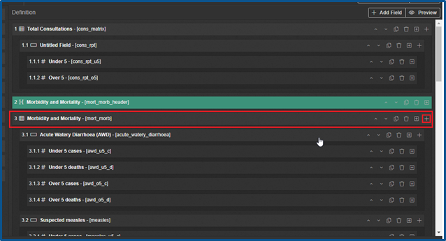
- Look for the Morbidity and Mortality table field > click on the add
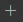
icon, and a new field is created inside the table. Look for New Field at the bottom of the table > click on the expand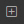
icon, and the screen below appears:
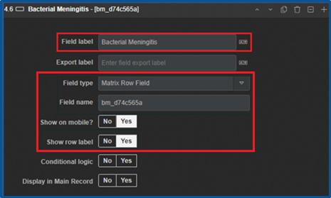
- Enter “Bacterial Meningitis” as the Field label > select the Field type as Matrix Row Field > set Show on Mobile? to Yes > set Show row label to Yes. > Let the other options remain the defaults. The Bacterial Meningitis row is added.
Next, add an Input field for Under 5 cases.
Click on the add icon of Bacterial Meningitis, and New Field is added under the Bacterial Meningitis row. Click on the expand icon of New Field.
Enter “Under 5 cases” as the Field label > select the Field type as Numeric Field. Let the other options remain the defaults.
In the same way, add three more Numeric Fields with Field labels Under 5 deaths, Over 5 cases and Over 5 deaths.
Click on Preview, and the added row is visible, as shown below:
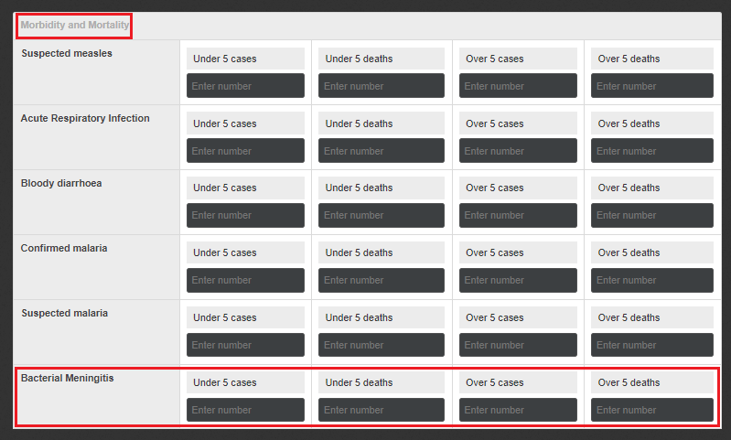
- Click on Save Change(s).
When you copy a sample form, dependencies such as indicators are also transferred to your account. However, when you make edits and modifications, you also must make changes to the dependencies – i.e. the indicators. You need to map the form fields to the indicators in the system; otherwise, EWARS cannot link or make data accessible for analysis.
6.3.1 Linking form fields and indicators via the logic feature
Every time you add a new field to the sample form, you need to modify the logic and link the indicator. For more information, refer to topic 6.6 Adding logic in the form. If you don’t have a matching indicator in the system, create indicators according to your requirements. For example, make sure you have created an indicator for Bacterial meningitis before you map the new form field and the indicator. To create an indicator, refer to Chapter 5. Indicators, topic 5.5 Creating indicators.
Select Menu > Forms > click on the edit icon of Weekly EWARS Reporting Form > click on the Logic tab.
Click on Add Indicator > click on the expand icon to expand the indicator > select the indicator Bacterial Meningitis Under 5 > on the left-hand side. Click on Form > click on Data [root] > click on Morbidity and Mortality [matrix] to find the matching form field in the weekly EWARS reporting form for Bacterial Meningitis under 5 > drag and drop the Bacterial Meningitis Under 5 cases [number] field from left to right on the selected indicator. These actions link the form field and the indicator.
Similarly, map the other three fields: Under 5 deaths, Over 5 cases and Over 5 deaths with the relevant indicators.
Click on Save Change(s).
6.4 Creating a new form
You can create a new form if you have not copied the sample form to your account. Creating a form involves four major steps (Fig. 6.2).
Fig. 6.2. Steps to create a form
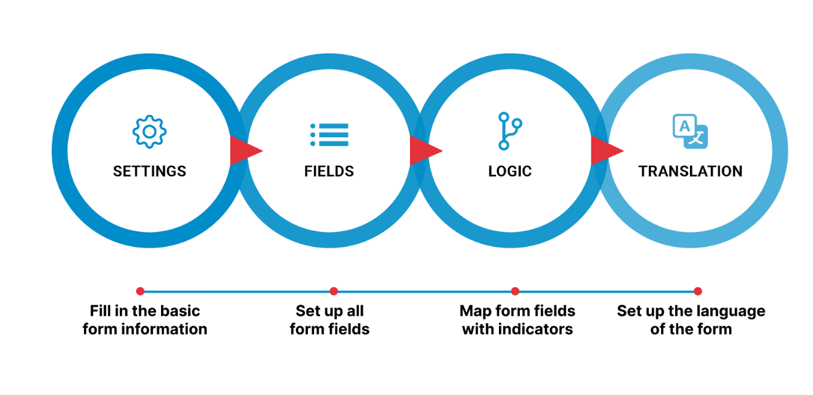
Details of the steps are as follows:
Settings enables you to set up basic information related to the form, such as name, identifier (ID) and so on.
Fields enables you to set up all form fields.
Logic enables you to link form fields with the indicators in the system.
Translation enables you to set the language for the form.
The following steps set out how to create the form with basic information setting.
- Select Menu > Forms. Click on New Form, and the Form Settings screen below opens:
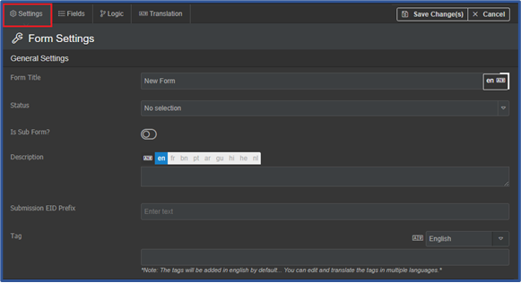
Add the Form Title (e.g. “EWARS reporting form”).
Set Status as Active.
Active: visible in the reporting manager menu and can be assigned to the users
Archived: archived forms no longer in use
Draft: forms that are yet to be completed or configured
- Keep Is Sub Form? disabled (assuming that you are creating a main form).
- If Is Sub Form? is enabled, you can create a sub form – refer to topic 6.9 Creating a sub form for more information.
Enter a Description for the form.
Enter the Submission electronic identification (EID) Prefix (e.g. “FV1” for form version 1). The same form may have different versions, so you can add prefixes according to the versions, such as FV1, FV2 and so on.
- EWARS auto-generates a Submission EID for each submitted record. With the Submission EID Prefix, the user can identify the submitted records easily. For example, if the specified Submission EID Prefix is “FV1”, the Submission EID will be in the format FV1-0B-9604-9601-D646. If the prefix is not set, then the Submission EID will be in the format 0B-9604-9601-D646.
- Enter a Tag for the form.
- A tag is an ID that will help you to find your form rapidly with a search field, especially when you have a number of forms to select from. You can add one or more tags or leave the field blank.
Click on Allow Export to enable it. Exports allow the reporting data in the form to be exported as Excel or comma-separated values (CSV) formats. (For more information, refer to Chapter 23. Exports, topic 23.1 Exporting form submissions). By default, it is disabled.
Click on Save Change(s).
Once you have set up all the details under the Settings tab, move to the Fields tab.
6.5 Adding and configuring data fields in the form
| Before |
you create an electronic form in EWARS, have your paper reporting form handy to guide you on the format. The electronic form looks like the paper form for all users. |
The next step is to configure the data fields. Various fields are available to develop the form in EWARS, such as text field, select field and date field. Follow the steps below to view all the available fields.
- Select Menu > Forms > click on the edit icon in your desired form. Click on the
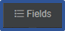
tab, and the screen below appears:
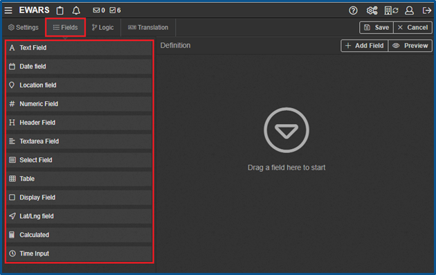
This is where you can create data fields to report information. There are several types of fields, and you can choose which to use, according to your requirements. You can add a new field in two ways:
Drag any field and drop it on the right-hand side of the screen.
Click on Add Field to add a new field.
Regardless of the method you use to add form fields, they have common options to be configured. For example, if you want to add a location field, the following options of the form field are available:
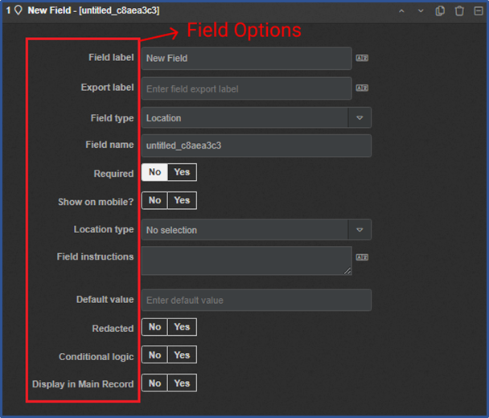
Before you start configuring the form fields, it is recommended that you go through the following explanation (Table 6.1).
Table 6.1. Fields and descriptions
| Field | Description |
|---|---|
| Field label | 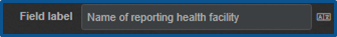 |This shows what data/information the user needs to provide in the field. When previewing the form or completing the form in EWARS Mobile, the field label appears, as shown below: 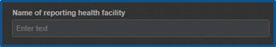 |When the field label is set as name of reporting health facility for a text-input field, you need to specify the reporting health facility name. Use an appropriate field label. |
| Export label | 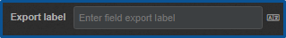 |Once you export the records of the form, the export label appears inside the CSV file as a data column label. Export label does not appear on the form. Give a name to the export label. If left blank while exporting, the column name becomes the field name. |
| Field name | 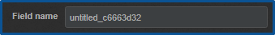 |This is an ID for the field, so it should be unique. For this purpose, when a user creates a new field, the field name is specified by the system automatically as, for example, “untitled_c6663d32”. It is recommended that users should change the first part (“untitled”) to an appropriate label to identify the field and leave the second part as it is. |
| Show on mobile? | 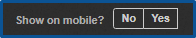 |This can be set as Yes or No. If set as Yes, the field is visible on a mobile phone or tablet while the Reporting User is filling in the form. If set as No, the field is not visible while the form is being filled in on a mobile phone or tablet. |
| Conditional logic | 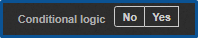 |This can be set as Yes or No. If set as Yes, you can display or hide the field based on the set conditions. If the condition is satisfied, the selected field is visible; otherwise the field is hidden. If set as No, you can’t set up the conditions. To set up conditional logic, select Yes, and the rules editor appears, as shown below: 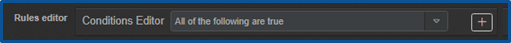 |
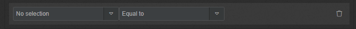 |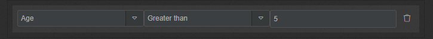 |You can repeat the process to add multiple rules. If multiple rules are added, you also need to select one of the options All of the following are true or Any of the following are true, according to your needs. For example, in a line list, imagine that the previous question is about case outcomes with an array of responses as below:
You can make the next question a conditional one, based on the response. For example, you can request the date of death: 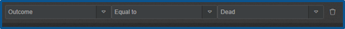 |Similarly, you can request the date of discharge: 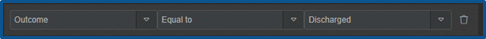 | |
Display in Main Record |
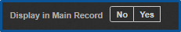 |This feature is applicable only to sub forms: it enables inclusion of a sub form field in the main form field. It can be set as Yes or No. If set as Yes, this field of the sub form is automatically displayed in the main form. If set as No, this field is not included in the main form. |
| Required | 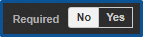 |If you want this field to be mandatory in the form, select Yes; if not, select No. All mandatory fields should be completed in a form. Without filling them in, the form cannot be submitted. |
| Field instructions | This relates to extra information you add to a field that can be used to complete it easily. This option is used to specify the exact input type you require. In Report manager, hover and click on the field label to view the field instructions. For example, you could add an instruction of “Please fill in block capitals” under the name of the reporting health facility: 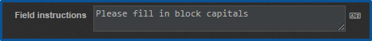 |In the reporting form, if you hover over the question, the specific instructions are displayed as below: 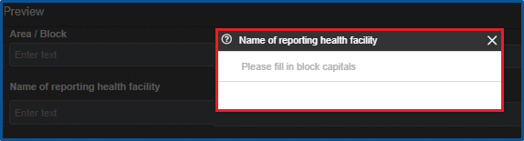 | |
| Default value | This is a predefined value that is used by the field when a user has not specified the value. When reporting a new record in EWARS Mobile or previewing a form, the default value specified in the field is auto-populated. For example, imagine a selected field type “Treatment received” has four values:
The default value can be set as IV fluids, as shown below: 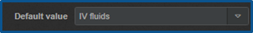 |When reporting a new record in EWARS Mobile, assuming that the user has not selected any value in the “Treatment Received” field, since the default value is set as IV fluids, this is considered the value for the field “Treatment Received”. |
| Redacted | 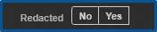 |This helps to confirm which fields will be exported. If set as Yes, you won’t be able to see this field in the export file while performing the export. The field will not be exported. If set as No, you will be able to see this field in the export file. |
| Placeholder | This attribute specifies a short hint that describes the expected value of an input field. For example, “Enter your comments on the case” is the placeholder for the comments text area field: 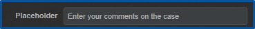 |When reporting a record in the EWARS Web version or previewing a form, the placeholder is visible inside the input field in grey text, as shown below: 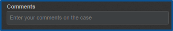 |Once you enter the field value, the placeholder disappears. |
The following topics set out how to add and configure different fields in the reporting form.
6.5.1 Configuring the header field
The header field is used to provide the heading for the form, but it is not used to enter data.
- Drag Header Field from the left-hand side and drop it on the right-hand side. Click on the expand icon of the Header Field, and the screen below appears:
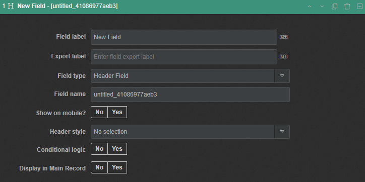
Enter a Field label (e.g. “Lab Report”) > set Field type as Header Field if not set > change the Field name (e.g. to “rs_478s883”).
Select Header style as Title. The header is displayed with the Title style, as shown below:
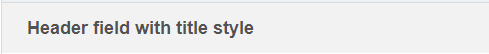
- Alternatively, select Header style as Sub-title. The header is displayed with the Sub-title style, as shown below:
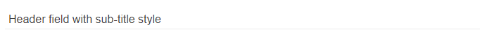
- Click on Save Change(s).
6.5.2 Configuring the table/matrix
Table/matrix arranges the form field in a tabular manner. It is used not to capture data but to arrange the fields.
If you would like to add a number field to the table field, you need to add matrix row field and numeric field as explained in 6.5.3 Configuring the matrix row field and 6.5.4 Configuring the numeric field
| Note: “table” and “matrix” are the same in EWARS: the names are used interchangeably. |
- Drag Table/Matrix from the left-hand side and drop it on the right-hand side. Click on the expand icon of the Table/Matrix, and the screen below appears:
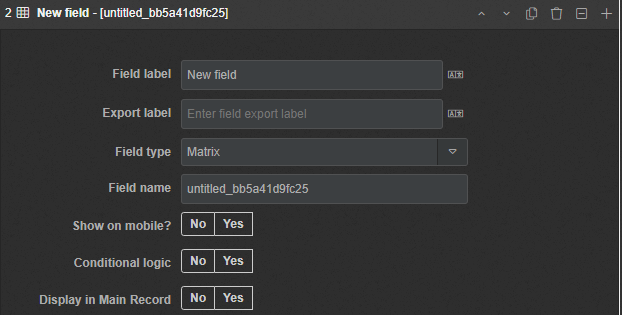
Enter a Field label (e.g. “Morbidity and Mortality”) > set Field type as Matrix if not set > change the Field name (e.g. to “mr_478s884”).
Click on Save Change(s).
6.5.3 Configuring the matrix row field
If you have a table/matrix, it should be filled with matrix row fields. These are used inside the table/matrix to define rows inside the table (matrix).
- Click on the add icon of the matrix field (e.g. the Morbidity and Mortality table), and a new Matrix Row Field is added. Click on the expand icon of the Matrix Row Field, and the screen below appears:
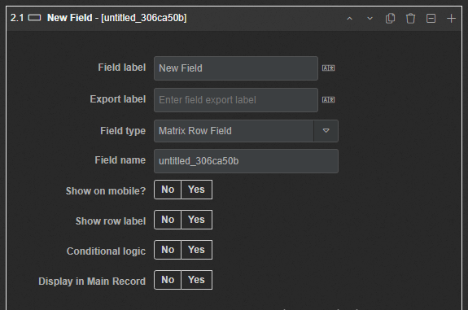
Enter a Field label (e.g. “Acute Watery Diarrhoea (AWD)”) > change the Field name (e.g. to “awd_84622e92”).
Show row label: by default, the row label won’t be visible. By enabling this feature, you can see the specified row label, as shown below:
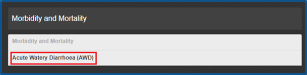
- Click on Save Change(s).
| Note: you can add fields inside the row by clicking the add icon of the row. |
The screenshot below depicts the table (matrix) field as morbidity and mortality, the matrix row field as acute watery diarrhoea (AWD) and the numeric field under 5 cases is added inside the matrix row field.
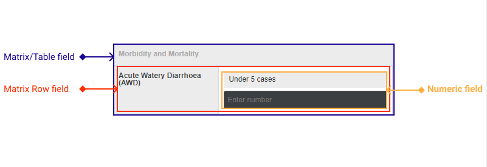
6.5.4 Configuring the numeric field
You can use this field type to capture numeric values in the form.
- Drag Numeric Field from the left-hand side and drop it on the right-hand side. Click on the expand icon of the Numeric Field, and the screen below appears:
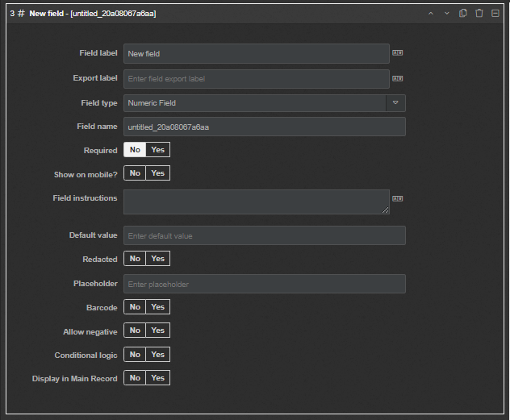
Enter a Field label (e.g. “Under 5”) > set Field type as Numeric Field if not set > change the Field name (e.g. to “u5_4266379”). You can select other options according to your requirements.
Allow negative: if set as Yes, a negative value can be entered into the field.
Barcode: if set as Yes, you can scan the barcode to input a value into the field, although you also have the option to enter/type it manually.
Click on Save Change(s).
6.5.5 Configuring the text field
Text fields can be used to input small text values, such as the name of a person. They also support barcode scanning, as explained in the numeric field topic above.
- Drag Text Field from the left-hand side and drop it on the right-hand side. Click on the expand icon of the Text Field, and the screen below appears:
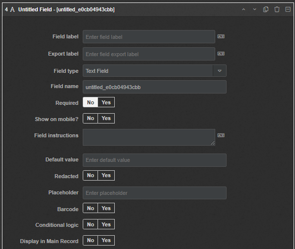
Enter a Field label (e.g. “Laboratory name”) > set Field type as Text Field if not set > change the Field name (e.g. to “ln_e0cb049”).
Barcode: if set as Yes, you can scan the barcode to input a value into the field, although you also have the option to enter/type it manually.
- Click on Save Change(s).
6.5.6 Configuring the text area field
The text area field can be used to capture descriptive text that is longer than that in the text field (e.g. describing patient complaints).
- Drag Text area Field from the left-hand side and drop it on the right-hand side. Click on the expand icon of the Text area Field, and the screen below appears:
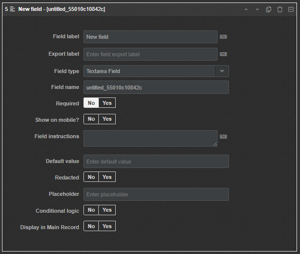
Enter a Field label (e.g. “Laboratory details”) > set Field type as Text area Field if not set > change the Field name (e.g. to “ld_e0cb049”).
Click on Save Change(s).
6.5.7 Configuring the select field
The select field is used to add the drop-down menu list options to the form. Alternatively, you can upload a CSV file containing these options. To add options, you need to provide stored values and display values for the options. Display values are visible to the users on the screen, whereas stored values cannot be seen.
- Drag Select Field from the left-hand side and drop it on the right-hand side. Click on the expand icon of the Select Field, and the screen below appears:
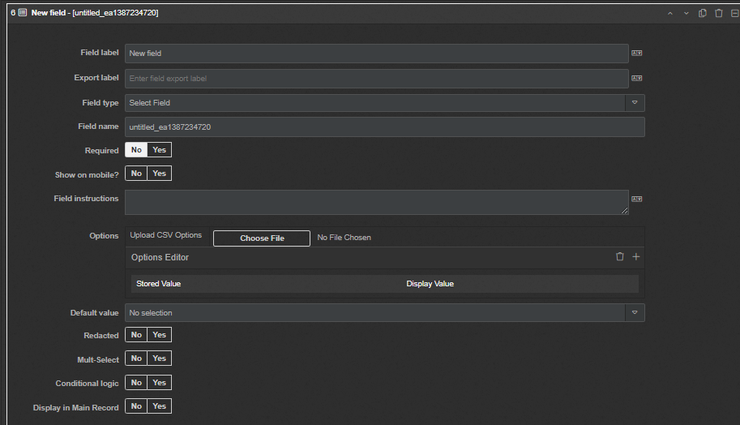
- Enter a Field label (e.g. “Reporting person”) > set Field type as Select Field if not set > change the Field name (e.g. to “rp_5a0b9ce2”).
You can add drop-down options to the select field in two ways.
- To add Options by entering the Stored Value and Display Value:
- Click on the add icon in the Options Editor > enter, for example, “SUR” in Stored Value and “Surveillance Officer” in Display Value.
As shown above, you can continue to add options according to your requirements.
- To add Options by uploading a CSV file:
- Create a CSV file, as shown below, and add the Options as required:
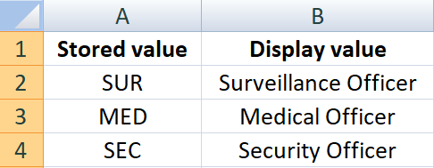
- Click on Choose File > select the CSV file. The Options are populated from the CSV file as shown below:
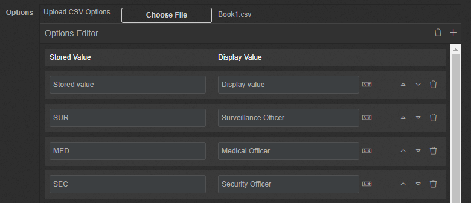
Multi-Select: by enabling this, a Reporting User can select more than one option in this field. By default, a Reporting User can select a single option from the list.
Click on Save Change(s).
6.5.8 Configuring the date field
This field can be used to capture a particular date, week, month or year.
- Drag Date field from the left-hand side and drop it on the right-hand side. Click on the expand icon of the date field, and the screen below appears:
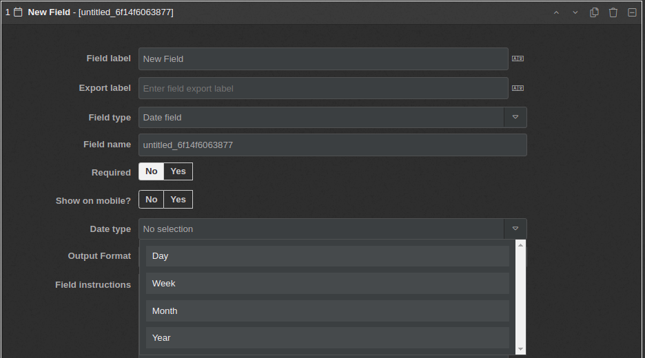
Enter a Field label (e.g. “Birth Date”) > set Field type as Date field if not set. Change the Field name (e.g. to “BD_5386e894”).
Date type: This has four values: Day, Weekly, Month and Year. The default option is Day.
- When the Day option is selected, the user can pick any date. The options in the reporting form appear as below:
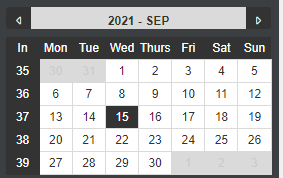
- When the ISO8601 Weekly option is selected, the user can pick any week of any year:
- When the Month option is selected, the user can pick any month of any year:
- When the Year option is selected, the user can pick any year:
Select an appropriate option (e.g. Day (the default)).
Allow future dates: by default, the date picker does not allow you to select a future date. By enabling this feature, users can select any future date.
Click on Save Change(s).
6.5.9 Configuring the time field
The time field can be used to capture time in hours and minutes.
- Drag Time Field from the left-hand side and drop it on the right-hand side. Click on the expand icon of the Time Field, and the screen below appears:
Enter a Field label (e.g. “Duration”) > set Field type as Time Field if not set > change the Field Name (e.g. to “TM_5386e894”).
Click on Save Change(s).
6.5.10 Configuring the location field
The location field is used to capture a location name in the form. The location drop-down menu populates all the available locations in the country.
- Drag Location field from the left-hand side and drop it on the right-hand side. Click on the expand icon of the location field, and the screen below appears:
- Enter a Field label (e.g. “Location”) > set Field type as Location if not set > change the Field name (e.g. to “location_5a0b9ce2”).
You can restrict location selection to a specific location type.
- Location type: by default, this is set as No selection and no restrictions apply. You can select any location while reporting. By configuring Location type, you can restrict location selection based on the selected Location type. Locations that appear in your drop-down menu are the locations present in the account settings.
Select a Location type to restrict the selection (e.g. Health facility).
Click on Save Change(s).
6.5.11 Configuring the Lat/Long field
You may want to capture global positioning system (GPS) coordinates of the reporting locations. You can add a data field to the reporting form to capture latitudes and longitudes with the Lat/Long field. Once you configure Lat/Long field in the form, Reporting Users can enter latitude and longitudinal data either by double tapping on the Lat/Long reporting field (only if location identification is enabled) or manually.
- Drag Lat/Long field from the left-hand side and drop it on the right-hand side. Click on the expand icon of the Lat/Long field, and the screen below appears:
Enter a Field label (e.g. “GPS Coordinates”) > set Field type as Lat/Long field if not set > change the Field name (e.g. to “gps_5a0b9ce2”).
Click on Save Change(s).
6.5.12 Configuring the calculated (display)
This field is used to compute the sum or concatenate the source field(s) added. While you are completing the form in Report manager, the value in the calculated field is displayed as a non-editable display value. You cannot edit it directly, but you can fill in values inside the source field(s), and those values are updated automatically inside the calculated field.
- Drag Calculated field from the left-hand side and drop it on the right-hand side. Click on the expand icon of the Calculated field, and the screen below appears:
Enter a Field label (e.g. “Total AWD cases”) > set Field type as Calculated (Display) if not set > change the Field name (e.g. to “total_awd_cases_9m99999”).
To add Source field(s), click on the add icon > select a Numeric Field from the drop-down menu (e.g. Under 5 AWD Cases) > click on the add icon > select another Numeric Field from the drop-down menu (e.g. Over 5 AWD Cases). Select Sum as the Operator type:
When previewing the form field, you can enter the numeric values in Under 5 AWD Cases and Over 5 AWD Cases, and the total is counted automatically in the Calculated field:
- Alternatively, you can click on the add icon > select a text field from the drop-down menu (e.g. Case name). Click again on the add icon > select CONCATE in Operator type > enter a Separator for concatenation (e.g. “-”).
- While previewing the form field, you can enter text in Case name, and a numeric value in age; the concatenated string is displayed automatically in the Calculated field:
- Click on Save Change(s).
6.6 Adding logic in the form
After successfully creating a form with the form fields above, you need to connect the form fields with the indicators in the system. Otherwise, EWARS cannot link or make data accessible for analysis.
| Note: form fields and indicators should be pre-created in the system before adding the logic. |
The following sections illustrate how you can match form fields with the indicators.
- Select Menu > Forms. Click on the edit icon in your desired form > click on the Logic tab.
Click on the folder  icon to expand that folder, and you will see the form fields you have created in the new form, as shown below:
icon to expand that folder, and you will see the form fields you have created in the new form, as shown below:
For demonstration purposes, this guide uses the following three examples.
Example 1. You have a form field that collects under 5 AWD cases, and you want to link the data with the under 5 AWD indicator.
- Click on Add Indicator > expand the indicator using the expand icon > select the indicator from the drop-down menu (e.g. AWD Under 5). Drag the relevant form field from the left-hand side and drop it on the right-hand side.
| Note: indicators can hold only numeric values, so you can only drag a numeric field. |
- Click on Save Change(s).
The two examples below illustrate how a complex set in the form logic can be used to connect data fields to indicators. A complex set is used when the connection between data field and the indicator is not simple or straightforward. Example 2 illustrates how a complex set can be used to connect a text field with an indicator. Example 3 is about connecting several data fields in the same form with one indicator.
Example 2. You have a text field that collects information on cholera from the event-based surveillance form, and you want to link these data with the disease indicator Cholera total cases, which usually collects suspected cholera from the weekly EWARS form.
Select Event-Based Surveillance Form > click on the edit icon > click on the Logic tab > click on the folder
icon to expand the Form folder and then the Data [root] folder to view the form fields.Click on Add Indicator > click on the expand icon to expand the indicator > select the indicator Total Cholera Cases from the drop-down menu. Drag and drop Complex Set from the left-hand side to the right-hand side of the expanded indicator.
Click on the add icon to add a condition. In the added condition, select the matching text field from the left-hand drop-down menu (e. g. Likely Disease) > select Is equal to in the middle comparator > enter the text you wish to compare (e. g. “Cholera”) in the text box, as shown below:
This ensures that any text field in the event-based surveillance form or any other form can be matched with the existing indicator.
| Note: you can apply conditions to the date field, numeric field and select field as well. |
If the condition is satisfied, the indicator value is the value of the field mapped; otherwise, a null value is returned.
- Click on Save Change(s).
Example 3. You have an indicator in the system called “Cholera deaths 15–44”, but there is no single data field in the cholera line list form that collects these data. You have to constitute the data on cholera deaths in the age range 15–44 years to feed in to the indicator with a complex set. A complex set will allow you to set conditions, enabling capturing deaths in the age range 15–44 years that will eventually feed in to the indicator.
Select the Cholera Line List form > click on the edit icon > click on the Logic tab > click on Add Indicator > select the indicator Cholera deaths 15-44 from the drop-down menu > drag and drop Complex Set from the left-hand side to the right-hand side of the expanded indicator.
Click on the add icon to add a condition row. Select the data field Age from the form’s drop-down menu > select the comparator Is greater than or equal to > enter “15” in the final cell.
To add the next condition click on the add icon, and one more condition row is added. Select the data field Age from the form’s drop-down menu > select the comparator Is less than > enter “45” in the final cell.
Click on the add icon to add the third condition > select the data field Outcome from the form’s drop-down menu > select the comparator Is equal to > select Dead in the final cell.
As you want all three conditions to be fulfilled to connect the data with the indicator, select ALL of the following are TRUE from the Complex Set options. Information will be fed to the indicator when only conditions that fulfil your instructions are met, as shown below:
Each added condition is evaluated independently with the result TRUE or FALSE, and then based on the ALL or ANY selection, the result is obtained.
- Click on Save Change(s).
6.7 Translating the form into a preferred language
The translation tab is used to provide multilingual labels for the form and its field labels. This is needed when the user interface of your account is displayed in one language (such as English), but the reporting forms in the EWARS Mobile version will be completed by people who use another language (such as French).
If your account is created in a language other than English, only the system labels are translated at the time of account creation: the form fields that are dynamic need to be translated.
- Select Menu > Forms. Click on the edit icon in your desired form > click on the Translation tab, and the screen below appears:
This is where you can provide multilingual labels to the form and fields, according to the language set in the account settings.
For example, if form field labels are configured in English and you require them in French, you need to translate them from English to French as follows.
- Select a preferred language (e.g. French) from the language drop-down menu. Check all the Labels to translate > click on Auto-translate, and the labels are translated into the new language. Go through and make changes if required > click on Save Change(s).
| Note: if you do not see the desired language in the language drop-down menu, it needs to be added to the account. |
To find out more about adding languages, refer to Chapter 10. EWARS account settings, topic 10.6.4 Adding a new language to your account.
6.8 Enabling specific features
Once you have created the new form, you can enable specific features such as interval-based reporting, set up overdue thresholds and location-based reporting, and enable unique ID generation and amendments, as shown below:
Interval-based reporting and location-based reporting have an impact on data analysis – for example, if you enable interval-based reporting, the report date field is added to the form automatically, and if you enable location-based reporting, you don’t need to add a location field explicitly as the location field with its options is generated automatically.
6.8.1 Enabling interval-based reporting
When you enable interval-based reporting, the reporting must be done on a predefined basis (e.g. daily, weekly, monthly or yearly).
- Select Menu > Forms. Click on the edit icon of the form (e.g. Weekly EWARS Reporting Form). Look for Interval-Based Reporting visible under Features > click on the toggle icon to enable it, and the icon colour changes to green. Click on the expand icon > select an interval (Daily, Weekly, Monthly or Yearly) from the Reporting Interval drop-down menu. Click on Save Change(s).
6.8.2 Setting an overdue threshold for interval-based reporting
The overdue threshold is the extra time interval you are allowed after the reporting due date for submission is reached. Note that you can still submit a report, even if the overdue threshold time interval is exceeded. This will have an impact on the timeliness of reporting, however, as this will decrease as the threshold time increases.
- Select Menu > Forms. Click on the edit icon of the form (e.g. Weekly EWARS Reporting Form). Look for Overdue Thresholds visible under Features > click on the toggle icon to enable it, and the icon colour changes to green. Click on the expand icon > select an overdue interval type (Day(s), Week(s), Month(s) or Year(s)) > enter the Overdue Threshold value as the number of intervals of the selected type. Click on Save Change(s).
For example, to set an overdue threshold of three days, set overdue interval type as day(s) and the overdue threshold value as “3”.
If the EWARS epidemiological week (epi week) is set from Sunday to Saturday in the system and the overdue threshold is set as three days (i.e. Tuesday), any forms submitted after Tuesday are considered late submissions. If you don’t set the overdue threshold, any report submitted after Saturday is considered late.
6.8.3 Restricting reporting to a particular location type
If this feature is not enabled, then the Reporting User can select any location as they report, but you can restrict reporting to administrative locations.
For example, you can restrict reporting to the health facility location type as follows.
- Select Menu > Forms. Click on the edit icon in your desired form (e.g. Weekly EWARS Reporting Form). Look for Location-Based Reporting visible under Features > click on the toggle icon to enable it, and the icon colour changes to green. Click on the expand icon > select the Location type Health Facility from the drop-down menu. Click on Save Change(s).
6.8.4 Enabling unique ID generation for the form
You can configure a unique ID in two ways, as outlined below.
6.8.4.1 Using the field of the form as a unique ID
This method is useful in cases of line listing, where you are capturing a government-issued ID card number as part of the form (e.g. a social security number, tax registration number, health card ID or similar).
| Note: to use the field of the form as a unique ID, you should have a unique ID field in the reporting form. |
- Select Menu > Forms. Click on the edit icon in your desired form (e.g. Weekly EWARS Reporting Form). Look for Enable Unique ID Generation visible under Features > click on the toggle icon to enable it, and the icon colour changes to green. Click on the expand icon > select a field from the Unique ID Field Name drop-down menu. Click on Save Change(s).
6.8.4.2 Auto-generating a unique ID on form submissions
This method is useful when no unique information is being captured as part of the form, but it needs to be generated automatically, based on the reporting form prefix, location prefix and serial number. Decide what prefix should be used for locations and forms before generating the unique ID. Prefixes can be easily understood abbreviated names for forms and locations (e.g. “CCRF” for Community Case Reporting Form and “AIM” for Aimal province), followed by a serial number with five digits (e.g. 00001).
Select Menu > Forms. Click on the edit icon in your desired form (e.g. Weekly EWARS Reporting Form). Look for Enable Unique ID Generation visible under Features > click on the toggle icon to enable it, and the icon colour changes to green. Click on the expand icon > click on the toggle icon to enable Generate unique sequence on form submissions, and the icon colour changes to green.
Select the location type (e.g. Provinces) from the Prefix Location type drop-down menu.
Set a location prefix for each province as follows:
- Select Menu > Locations. Expand the location hierarchy by clicking on the folder icon > click on location name, and the location details appear at the right-hand side. Enter the location Prefix (e.g. “AIM” for Aimal). Click on Save Change(s).
- Select the required number of digits from the Serial number length drop-down menu (e.g. 5), and the serial numbers will have five digits (e.g. 00001).
- Enter the Form Prefix (e.g. “CCRF”).
- Click on Save Change(s).
On submission of the form report, the system auto-generates a unique ID based on the above configuration.
The format of unique IDs is form prefix-location prefix-serial number. For example, in the Unique ID CCRF-AIM-PHC1-000001, CCRF is the form prefix, AIM-PHC1 is the location prefix and 000001 is the serial number.
6.8.5 Enabling approval requirement for amendments
You can require the Account Administrator’s approval to enable an amendment to a report that has already been submitted. By default, this is disabled, and approval is not required.
This feature allows you to ensure that submitted data cannot be changed without the approval of the Account Administrator.
- Select Menu > Forms. Click on the edit icon in your desired form (e.g. Weekly EWARS Reporting Form). Look for Amendments visible under Features > click on the toggle icon to enable it, and the icon colour changes to green. Click on the expand icon > click on the toggle icon to enable Require approval, and the icon colour changes to green. Click on Save Change(s).
For more information, refer to Chapter 9. User profiles, tasks and notifications, topic 9.5.4 Performing amendment requests.
6.9 Creating a sub form
In EWARS, two or more forms can be linked together. They can be categorized as main forms and sub forms, based on their lineage. For example, cholera line list is the main form, which can have sub forms of cholera laboratory confirmation form under each patient.
Sub forms are used to capture additional information for the main form. They are associated with a main form via an identity field. Examples of identity fields are government-issued unique card numbers, health card numbers, tax registration numbers, mobile phone numbers and any other unique generated codes.
If the main form does not have any such identity field, you need to enable the feature enable unique ID generation. Refer to topic 6.8.4 Enabling unique ID generation for the form for more information.
| Note: to create a sub form, ensure that the main form is already created. |
Follow the steps below to create and configure a sub form.
Step 1. Create a sub form and set its options.
- Select Menu > Forms. Click on New Form, and the screen below appears:
Add the Form Title (e.g. “Cholera Laboratory confirmation form”).
Set Status as Active.
Click on the toggle icon to enable Is Sub Form?
After the Is Sub Form? option is enabled, the form is categorized as a sub form and you need to select a main form for it.
Select a Main Form from the drop-down menu (e.g. “Cholera Line List”).
Enter a Description for the form.
Leave the Submission EID Prefix and Tag fields blank.
Click on the toggle icon to enable Allow Export, allowing the export of the form records via Menu > Exports. By default, this feature is disabled.
Click on Save Change(s).
Step 2. Add the identity field of the main form to the sub form.
Click on the tab > click on Add Field > look for the newly added field and click on the expand icon. Enter a Field label (e.g. “Patient ID”) > set Field type to Main form field > select an identity field from the Main form fields drop-down menu (e.g. Patient ID) > set Is Editable as Yes > set all other field options as No.
Click on Save Change(s).
Step 3. Configure the sub form.
For additional configuration of the sub form refer to the relevant topics below.
To add and configure the fields, refer to topic 6.5 Adding and configuring data fields in the form.
To add Logic, refer to topic 6.6 Adding logic in the form.
To add Translations, refer to topic 6.7 Translating the form into a preferred language.
To enable Interval-Based Reporting, refer to topic 6.8.1 Enabling interval-based reporting.
To set Overdue Thresholds for Interval-Based Reporting, refer to topic 6.8.2 Setting an overdue threshold for interval-based reporting.
To restrict a reporting form to a particular location type, such as Health Facility, refer to topic 6.8.3 Restricting reporting to a particular location type.
To enable Unique ID Generation, refer to topic 6.8.4 Enabling unique ID generation for the form
To enable Approval requirement for Amendments, refer to topic 6.8.5 Enabling approval requirement for amendments.
| Note: when you update a sub form, the main form is updated automatically. |
6.10 Duplicating a form
This feature allows you to duplicate a form and modify that form in the same account, according to your needs.
- Select Menu > Forms. Look for the form (e.g. Weekly EWARS Reporting Form). Click on the duplicate icon. Click on Confirm. A form with the name “Weekly EWARS Reporting Form copy” is created, as shown below:
You can then rename the form as follows.
- Select the duplicated form Weekly EWARS Reporting Form copy > click on the edit icon > change the Form Title, and the form is renamed. Click on Save Change(s).
6.11 Downloading and uploading forms
This feature allows you to download a form from EWARS and upload it to an EWARS account when needed.
| Note: the uploaded/imported form will not contain the fields and logic set under the settings and logic tabs, so you will need to reconfigure them. |
Step 1. Download an existing form to the user’s system.
- Select Menu > Forms. Go to the Weekly EWARS Reporting Form > click on the export icon. The exported form (form_export.ewars_form) is downloaded to the desktop, as shown below:
Step 2. Upload the downloaded form to an EWARS account.
- Select Menu > Forms. Click on Import Form at the top right-hand corner. Click on Choose File, and the file chooser option opens. Select form_export.ewars_form from the local directory structure. Click on Open, and form_export.ewars_form is uploaded. The screen below appears:
- Click on Save Change(s).
6.12 Pinning and grouping forms for Report manager
Forms within EWARS can be grouped into categories, based on their common characteristics. These groups are visible to users inside Report manager.
The screenshot below shows the Model account/Report manager, outlining the pinned form and form groups.
The following topics set out how to pin and group the forms.
6.12.1 Pinning a form
Forms added to the pinned group appear at the top of Report manager. All other groups appear below this.
- Select Menu > Forms. Click on Form Groups, and the screen below appears:
The forms are listed at the left-hand side, a default pinned group is set up, and a manually added early warning group is below this.
- Drag a form (e.g. Weekly EWARS Reporting Form) from the left-hand side to the Drop Forms Here box on the pinned section, and the form is pinned, as shown below:
- Click on Save Change(s).
You can then view pinned forms in Report manager.
- Select Menu > Report manager > Look for pinned forms at the left-hand side, as shown below:
The forms are listed at the left-hand side, and the form is available in the Pinned group at the top, as shown in the screenshot above.
6.12.2 Adding a new form group
You can add new groups to organize the forms, based on common characteristics.
- Select Menu > Forms. click on the Form Groups tab > click on Add Group at the top right-hand corner, and a New Group is added. Click on the added group name > change it to “Early Warning”, and the group is added, as shown below:
- Click on Save Change(s).
6.12.3 Adding forms to a form group
- Select Menu > Forms. Click on the Form Groups tab > drag the forms (e.g. Weekly EWARS Reporting Form and Event-Based Surveillance Form) from the left-hand side to the Drop Forms Here box under the Early Warning group, as shown below:
- Click on Save Change(s), and the forms are added to the group.
6.12.4 Ordering a form group
You can change the order of the form group, and it will be reflected in the Report manager menu. The top-most group is always the pinned group; other groups are ordered below it.
- Select Menu > Forms. Click on the Form Groups tab > click on the up icon to Move Up or click on the down icon to Move Down.
6.12.5 Removing a form group
- Select Menu > Forms. Click on the Form Groups tab > click on the delete icon at the right-hand side of the form group name (e.g. Early Warning), and the group is removed. Click on Save Change(s).
6.12.6 Removing forms from a form group
- Select Menu > Forms. Click on the Form Groups tab > click on the delete icon at the right-hand side of the form name (e.g. Weekly EWARS Reporting Form under the Early Warning group), and the form is removed. Click on Save Change(s).
After creating forms and setting up indicators, you can proceed to configure alarms. The following chapter gives an overview of how to set up alarms based on different criteria.